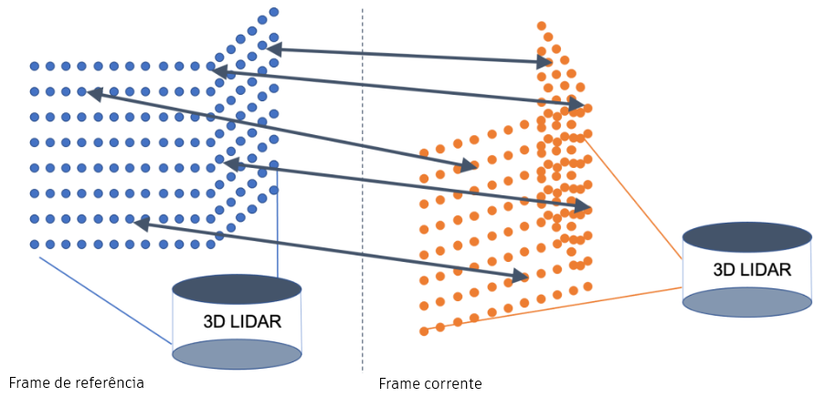
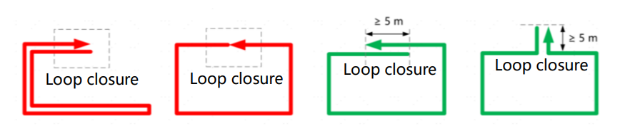
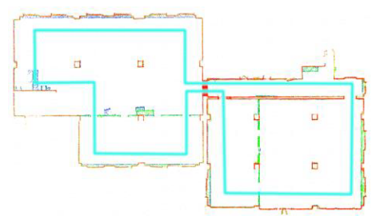
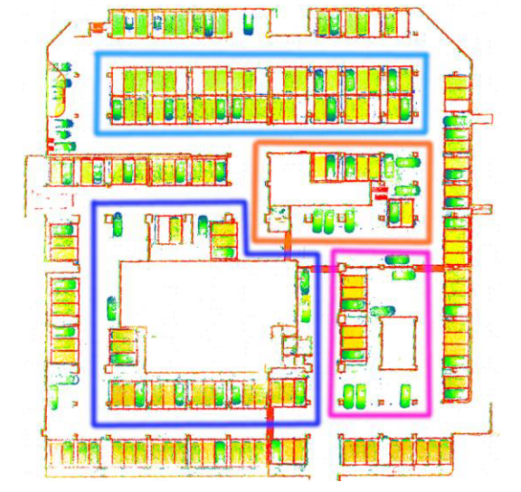
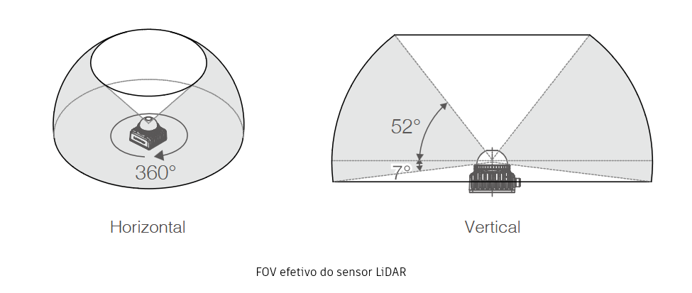
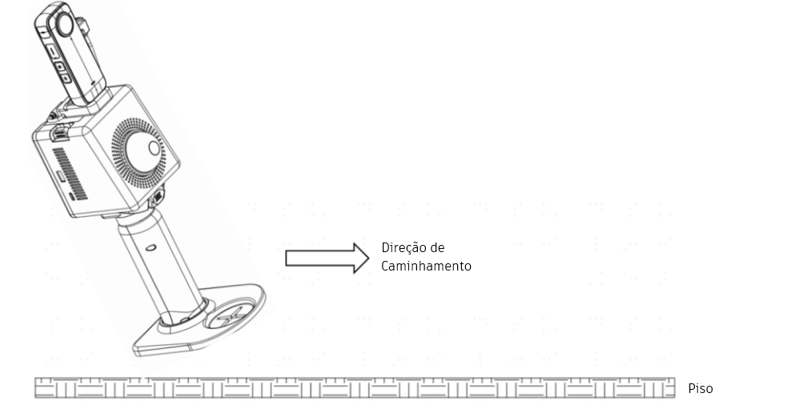
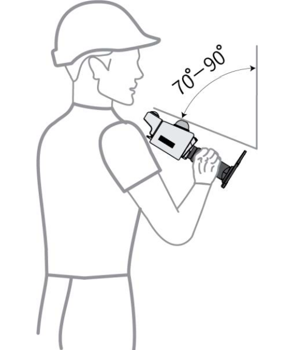
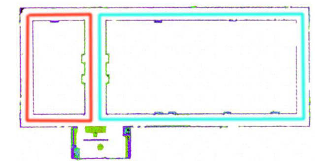

Escaneamento com o FJD Trion P1
Levantamento de campo
O levantamento de campo com o FJD Trion P1 é um processo que envolve a captura de dados tridimensionais de um ambiente usando o scanner LiDAR de mão. Para realizar um levantamento de campo com o FJD Trion P1, siga as etapas abaixo: 1. Preparação do equipamento: Certifique-se de que o FJD Trion P1 esteja completamente carregado e que o módulo da câmera esteja corretamente acoplado ao corpo do scanner. Verifique se o app de controle FJD Trion Scan está instalado em um dispositivo móvel compatível e que a conexão Wi-Fi entre o scanner e o dispositivo esteja configurada corretamente.
Configuração do ambiente: Antes de iniciar o levantamento de campo, é importante avaliar o ambiente e identificar quaisquer obstáculos ou áreas de interesse que possam afetar a captura de dados. Certifique-se de que o ambiente esteja seguro para a operação do scanner e que haja espaço suficiente para se mover livremente durante o processo de escaneamento.
Início do levantamento: Abra o aplicativo FJD Trion Scan no seu dispositivo móvel e siga as instruções para iniciar uma nova sessão de escaneamento. Ligue o equipamento. Inicie o escaneamento no aplicativo FJD Trion Scan. Aguarde a inicialização completa do scanner com o equipamento parado. Comece a se mover lentamente pelo ambiente, mantendo o scanner em uma posição de 60 graus da vertical, estável e evitando movimentos bruscos para garantir a qualidade dos dados capturados. O equipamento depende da identificação de elementos estáticos para conectar as nuvens de frames sequenciais como mostrado na figura @frames.

Captura de dados: À medida que você se move pelo ambiente, o FJD Trion P1 irá capturar dados LiDAR e imagens com a câmera integrada. Certifique-se de cobrir todas as áreas de interesse e de manter uma distância adequada do scanner em relação aos objetos para garantir a precisão dos dados. Evite obstruções e mantena o scanner em uma posição estável para minimizar a distorção dos dados capturados.
Finalização do levantamento: Após concluir o levantamento de campo, finalize a sessão de escaneamento no aplicativo FJD Trion Scan e salve os dados capturados. Certifique-se de que os dados estejam corretamente armazenados e organizados para facilitar o processamento e a análise posterior.
Desligamento do equipamento: Após finalizar o levantamento de campo, desligue o FJD Trion P1 seguindo as instruções fornecidas pelo fabricante para garantir a segurança do equipamento e a preservação dos dados capturados. Armazene o scanner em um local seguro e protegido de poeira, umidade e impactos para garantir a longevidade do equipamento e a qualidade dos dados capturados em futuras sessões de escaneamento.
Recomentações
Ambiente
Ao escanear o ambiente, o P1 constrói mapas e salva os dados da nuvem de pontos em tempo real. Sem a necessidade de um dispositivo GNSS, o P1 pode ser amplamente utilizado em cenários de levantamento topográfico internos, externos e subterrâneos, como estacionamentos e túneis subterrâneos. Ele apresenta grandes vantagens ao trabalhar em ambientes internos e subterrâneos, como em túneis e minas, pois não precisa de luz externa nem sofre interferência dela durante o uso.
Não aponte o P1 para um grande grupo de pessoas ou objetos em movimento, pois ele requer dados estáticos. Durante o escaneamento, o operador deve trabalhar sozinho. Se forem necessários parceiros, eles devem caminhar atrás do operador para evitar serem escaneados.
O P1 pode não ter um bom desempenho em alguns cenários. Lembre-se dos seguintes pontos ao usar o produto:
O escaneamento será afetado pela refração e reflexão especular. Evite áreas com grandes painéis de vidro.
Como o P1 depende da correspondência em tempo real de ambientes 3D, sua precisão será afetada em espaços com estruturas semelhantes (por exemplo, passagens e labirintos que não apresentam diferenças geométricas nas paredes) e em espaços sem estruturas claras (como gramados e praças grandes e abertos).
Limpe a área ao redor do P1 durante a inicialização. Recomenda-se realizar a inicialização com o P1 posicionado a uma certa altura, em vez de no chão.
Não use o P1 para escanear uma área com pessoas e veículos em movimento, como um cruzamento.
Fechamento de percurso
O fechamento de percurso é um processo importante para garantir a precisão dos dados capturados durante um levantamento de campo com o FJD Trion P1. Ele envolve a comparação dos dados capturados em diferentes pontos do levantamento para identificar e corrigir quaisquer discrepâncias ou erros que possam ter ocorrido durante o processo de escaneamento. Para realizar o fechamento de percurso, siga as etapas abaixo: Planeje o percurso antes de usar o P1. Um planejamento de percurso adequado garante a precisão do mapeamento.
1. Fechamento do circuito nas posições inicial e final Feche o circuito sempre que possível para minimizar o erro cumulativo. Consiste em “fechar o circuito” refazendo o levantamento de uma posição conhecida, e o caminho sobreposto deve ter pelo menos 5 m.
Recomenda-se que a varredura seja feita com base nos caminhos verdes abaixo.

Sempre feche o circuito refazendo o levantamento de uma posição conhecida por pelo menos 5 metros para minimizar erros cumulativos.
2. Fechamento de loop durante a digitalização
Os erros nos dados da nuvem de pontos se acumulam à medida que você caminha. Os erros diminuem com o aumento do fechamento de loop circular. Portanto, recomenda-se fechar o loop o máximo possível para minimizar os erros.
Ambientes comuns (cerca de 2.000 m²): Digitalize de acordo com o ambiente.

Ambientes amplos (about 10,000 m²): Feche o maior número de percursos quanto for possível.

3. Não Esqueça !
Identificação de pontos de controle: Durante o levantamento de campo, identifique pontos de controle que possam ser usados para comparar os dados capturados em diferentes áreas do ambiente. Esses pontos de controle podem ser marcadores físicos, como alvos ou balizas, ou podem ser características distintas do ambiente, como cantos de edifícios ou árvores.
Comparação dos dados: Após concluir o levantamento de campo, compare os dados capturados em diferentes pontos do ambiente usando os pontos de controle identificados. Use software de processamento de dados LiDAR para analisar os dados e identificar quaisquer discrepâncias ou erros que possam ter ocorrido durante o processo de escaneamento.
Correção dos dados: Se forem identificadas discrepâncias ou erros durante a comparação dos dados, use as ferramentas de correção disponíveis no software de processamento de dados LiDAR para ajustar os dados e garantir que eles sejam precisos e consistentes. Isso pode envolver a realinhamento dos dados, a remoção de pontos de ruído ou a aplicação de filtros para melhorar a qualidade dos dados capturados.
Validação dos dados: Após realizar as correções necessárias, valide os dados corrigidos para garantir que eles sejam precisos e adequados para as análises e aplicações pretendidas. Use os pontos de controle para verificar a precisão dos dados corrigidos e certifique-se de que eles estejam prontos para serem usados em projetos ou pesquisas futuras.
Transição entre ambientes
Tenha cuidado redobrado ao transitar entre ambientes, como entre salas e entre ambientes internos e externos, e ao fazer uma curva em U ou virar.
Transição entre salas Abra todas as portas antes de iniciar a digitalização. Não digitalize portas que estejam sendo abertas. Se P1 não estiver sendo segurado corretamente, se não houver elementos suficientes à frente ou se você andar muito rápido, P1 não conseguirá capturar elementos suficientes na nova sala, resultando em baixa qualidade de digitalização. Nesse caso, aponte P1 para a sala que foi digitalizada, de costas para a nova sala, e atravesse a porta lentamente para garantir que haja um período em que P1 possa visualizar elementos em ambos os lados da porta.
Transição entre ambientes internos e externos A transição entre ambientes internos e externos refere-se à transição de um ambiente fechado com muitos elementos para um ambiente aberto com poucos elementos, por exemplo, um corredor aberto. Nesse caso, P1 também apresenta baixa qualidade de digitalização. Para garantir a qualidade da digitalização, aponte P1 para o ambiente interno, de costas para o ambiente externo, e atravesse a porta lentamente para garantir que haja um período em que P1 possa visualizar elementos em ambos os lados da porta. Se o ambiente externo for muito aberto, tente encontrar um local com mais elementos para digitalizar, como um estacionamento ou uma praça com árvores.
Fazendo uma curva em U ou uma virada Ao fazer uma curva em U ou uma virada, reduza sua velocidade de caminhada para um terço da velocidade normal. Em seguida, faça a curva em U ou a virada lentamente e permaneça no mesmo lugar por 1 a 2 segundos especialmente em corredores, para garantir que haja um período em que P1 possa visualizar elementos em ambos os lados da curva.
Posicionamento do sensor
O campo de visão horizontal e vertical do LiDAR P1 é de 360° e 59°, respectivamente, conforme mostrado abaixo.

Para garantir que P1 capture o máximo de elementos possível, segure P1 com o módulo LiDAR inclinado 30° para trás, conforme mostrado abaixo, ao escanear espaços abertos com poucos elementos, espaços fechados (como abrigos subterrâneos, túneis, corredores e tubulações de esgoto) ou espaços abertos com muitos elementos (como estacionamentos subterrâneos, condomínios residenciais e parques).

Velocidade de Caminhada
Recomenda-se caminhar a uma velocidade constante (1 m/s) em ambientes comuns e reduzir a velocidade para 0,5 m/s ou menos ao passar por espaços estreitos, como corredores, túneis e cantos de escadas, para que o P1 possa escanear os espaços de forma eficaz e completa, garantindo a precisão da saída.
Alcance de Escaneamento
O P1 tem um alcance efetivo de 0,5 m a 70 m. Distância mínima: Para obter dados precisos da nuvem de pontos, o P1 deve estar a pelo menos 0,5 m dos alvos. Evite proximidade com paredes e tetos. Os dados podem não ser obtidos em ambos os lados em espaços estreitos, portanto, caminhe na área central sempre que possível. Distância máxima: Em condições ideais, o P1 é capaz de obter dados de alvos a uma distância máxima de 70 m. Na maioria dos casos, a precisão do escaneamento pode ser garantida a uma distância de até cerca de 40 m. Para garantir a qualidade da nuvem de pontos, recomenda-se usar o P1 a uma distância de cerca de 30 m.
Duração da digitalização
Para levantamentos muito extensos, divida o projeto em várias tarefas de digitalização para manter o tamanho do mapa em um nível adequado e evitar falhas de salvamento devido ao espaço de armazenamento limitado. Limite cada tarefa de digitalização a 20 minutos.
Cenário especial
Cenário: corredor (espaço estreito) O P1 pode apresentar desempenho insatisfatório ao digitalizar corredores com mais de 80 m com paredes lisas em ambos os lados e poucos elementos. Em tais corredores ou cenários semelhantes, siga as orientações abaixo para garantir a precisão do mapeamento: 1. Segure o P1 corretamente: Incline o P1 em um ângulo de 70° a 90°, conforme mostrado abaixo.

Escaneie separadamente: Se houver um corredor desse tipo na área a ser escaneada, escaneie-o separadamente.

Adicione elementos manualmente: Para um corredor com paredes lisas em ambos os lados e sem elementos óbvios, adicione elementos como cadeiras manualmente. Coloque as cadeiras na metade mais distante do corredor em intervalos desiguais de 5 m a 10 m.
Forme pequenos circuitos fechados: Planeje o máximo possível de pequenos circuitos fechados ao escanear um corredor.
Vire lentamente: Caminhe e vire o mais lentamente possível no final do corredor. Se a esquina for seguida por outro corredor, permaneça onde está por 1 a 2 segundos após a curva para coletar o máximo possível de dados de nuvem de pontos em cenários com mudanças espaciais repentinas.